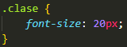

¿Qué es?
HEC (O, y de ahora en adelante, CSS, por sus siglas en inglés) es un lenguaje que permite definir y crear la presentación visual de un documento ya estructurado y escrito en HTML. Definiendo colores, tamaños, fuentes, posiciones y más características que mejoran la experiencia del usuario.
Origen
CSS fue creado por el Noruego HÃ¥kon Wium Lie, para permitir a desarrolladores web cambiar la distribución, colores y fuentes de sus sitios web. Originalmente, los sitios web estaban dirigidos sólamente a que lo usaran investigadores, por ende, la decoración no importaba. Sin embargo, cuando los sitios web se volvieron de uso amplio y masivo, la necesidad de que lucieran bien aumentó.
Selectores
global

El estilo se aplica a cada elemento en el documento HTML.
markup / por etiqueta de elemento

El estilo se aplica a cada elemento en el documento HTML con la misma etiqueta.
class / por clase
El estilo aplica a los elementos con la clase especificada.
id / por identificador

El estilo aplica a los elementos con el ID (Identificador) especificado.
Especificidad
Es la manera en que los navegadores deciden que valores de una propiedad CSS son mas relevantes para un elemento, y por ende serán aplicados con prioridad. Está basado en las reglas de coincidencia que están compuestas por diferentes tipos de selectores CSS.
Seudo-clase
Es una palabra clave añadida al selector, la cual especifica une estado concreto del elemento seleccionado.
A continuación explicamos las cuatro seudo-clases principales:

El estilo se aplica cuando el mouse pasa por encima, "flota", sobre un elemento.

EL estilo aplica cuando se hace click en el elemento.

Funciona cuando el usuario clickea un ingreso de datos (input).

El estilo se aplica a los elementos hijos, segun un patrón especificado en el argumento. (nth Child ~ Hijo numerado)
Animaciones
Las animaciones CSS hacen posible dar movimiento a transiciones de una estilo de CSS a otro. Las animaciones consisten en 2 componentes: La propiedad 'animation' describiendo que animación CSS utilizar y una serie de fotogramas clave (keyframes) que indican el comienzo y el final de los estados del elemento, asi como posibles puntos de recorrido intermedios (intermediate waypoints).

Propiedades personalizables o Variables
Las propiedades personalizables (A veces referidas como variables CSS o variables en cascada) son entidades definidas por autores de CSS que representan valores específicos para ser reusados a lo largo del documento.
Los sitios web complejos tienen grandes cantidades de líneas de CSS, y esto a menudo resulta en mucha cantidad de valores de CSS repetidos. Las propiedades personalizables permiten que un valor o configuracion se defina en un solo lugar, y que a partir de allí sea referenciado en múltiples lugares del documento, para facilitar el trabajo.
En CSS, puedes declarar una propiedad personalizada usando dos guiones (--) como un prefijo para el nombre de la propiedad, o usando la regla "@property".